유통관리사-2급 (2021-05-15 기출문제)
1과목: 유통물류일반
1. 두 가지 이상의 운송 수단을 활용하는 복합운송의 결합형태 중 화물차량과 철도를 이용하는 시스템으로 옳은 것은?
- 버디백 시스템(Birdy Back System)
- 피기백 시스템(Piggy Back System)
- 피시백 시스템(Fishy Back System)
- 스카이쉽 시스템(Sky-Ship System)
- 트레인쉽 시스템(Train-Ship System)
(정답률: 79%)

2. 아래 글상자 ㉠과 ㉡에서 공통적으로 설명하는 품질관리비용으로 옳은 것은?
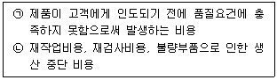
- 예방비용(prevention costs)
- 평가비용(appraisal costs)
- 내부실패비용(internal failure costs)
- 외부실패비용(external failure costs)
- 생산준비비용(setup costs)
(정답률: 79%)
3. 기업에서 사용할 수 있는 수직적 통합 전략의 장점과 단점에 대한 설명으로 가장 옳지 않은 것은?
- 조직의 규모가 지나치게 커질 수 있다.
- 관련된 각종 기능을 통제할 수 있다.
- 경로를 통합하기 위해 막대한 비용이 필요할 수 있다.
- 안정적인 원재료 공급효과를 누릴 수 있다.
- 분업에 의한 전문화라는 경쟁우위효과를 누릴 수 있다.
(정답률: 62%)
4. 아래 글상자 ㉠과 ㉡에서 설명하는 직무평가(job evaluation) 방법으로 옳은 것은?
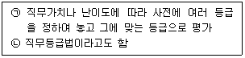
- 서열법(ranking method)
- 분류법(classification method)
- 점수법(point method)
- 요소비교법(factor comparison method)
- 직무순환법(job rotation method)
(정답률: 51%)
5. 자본구조에 관련하여 타인자본 중 단기부채로 옳지 않은 것은?
- 지급어음
- 외상매입금
- 미지급금
- 예수금
- 재평가적립금
(정답률: 53%)
6. 재고관리관련 정량주문법과 정기주문법의 비교 설명으로 옳지 않은 것은?
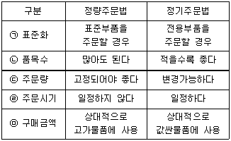
- ㉠
- ㉡
- ㉢
- ㉣
- ㉤
(정답률: 56%)
7. Formal 조직과 Informal 조직의 특징비교 설명으로 옳지 않은 것은?
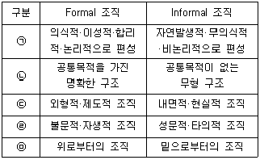
- ㉠
- ㉡
- ㉢
- ㉣
- ㉤
(정답률: 70%)
8. 유통기업은 각종 전략이외에도 윤리적인 부분을 고려해야 하는데, 이러한 윤리와 관련된 설명으로 가장 옳지 않은 것은?
- 윤리적인 것은 나라마다, 산업마다 다를 수 있다.
- 윤리는 개인과 회사의 행동을 지배하는 원칙이라 할 수 있다.
- 회사의 윤리 강령이라도 옳고 그름을 살펴서 판단해야 한다.
- 윤리는 법과 달리 처벌시스템이 존재하지 않으므로 간과해도 문제가 되지 않는다.
- 윤리적인 원칙은 시간의 흐름에 따라 변할 수도 있다.
(정답률: 82%)
9. 아래 글상자 내용은 기업이 사용하는 경영혁신 기법에 대한 설명이다. ( )안에 들어갈 용어로 가장 옳은 것은?
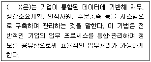
- 리엔지니어링
- 아웃소싱
- 식스시그마
- 전사적자원관리
- 벤치마킹
(정답률: 77%)
10. 제3자물류가 제공하는 혜택으로 옳지 않은 것은?
- 여러 기업들의 독자적인 물류업무 수행으로 인한 중복투자 등 사회적 낭비를 방지할 뿐만 아니라 수탁업체들의 경쟁을 통해 물류효율을 향상시킬 수 있다.
- 유통 등 물류를 아웃소싱함으로써 리드타임의 증가와 비용의 절감을 통해 고객만족을 높여 기업의 가치를 높일 수 있다.
- 기업들은 핵심부문에 집중하고 물류를 전문업체에 아웃소싱하여 규모의 경제 등 전문화 및 분업화 효과를 극대화할 수 있다.
- 아웃소싱을 통해 제조∙유통업체는 자본비용 및 인건비 등이 절감되고, 물류업체는 규모의 경제를 통해 화주기업의 비용을 절감해 준다.
- 경쟁력 강화를 위해 IT 및 수송 등 전문업체의 네트워크를 활용하여 비용절감 및 고객서비스를 향상시킬 수 있다.
(정답률: 72%)
11. 유통환경 분석의 범위를 거시환경과 미시환경으로 나누어볼 때 그 성격이 다른 하나는?
- 경제적 환경
- 정치, 법률적 환경
- 시장의 경쟁 환경
- 기술적 환경
- 사회문화적 환경
(정답률: 62%)
12. 아래 글상자 ㉠과 ㉡에서 설명하는 유통경로 경쟁으로 옳게 짝지어진 것은?
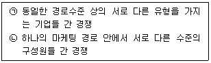
- ㉠ 수직적 경쟁, ㉡ 수평적 경쟁
- ㉠ 업태 간 경쟁, ㉡ 수직적 경쟁
- ㉠ 경로 간 경쟁, ㉡ 수평적 경쟁
- ㉠ 업태 간 경쟁, ㉡ 경로 간 경쟁
- ㉠ 수직적 경쟁, ㉡ 경로 간 경쟁
(정답률: 57%)
13. 팬먼(Penman)과 와이즈(Weisz)의 물류아웃소싱 성공전략에 관한 설명으로 옳지 않은 것은?
- 아웃소싱이 성공하려면 반드시 최고경영자의 관심과 지원이 필요하다.
- 아웃소싱의 궁극적인 목표는 현재와 미래의 고객만족에 있음을 잊지 말아야 한다.
- 지출되는 물류비용을 정확히 파악하여 아웃소싱 시 비용절감효과를 측정해야 한다.
- 아웃소싱의 가장 큰 장애는 인원감축 등에 대한 저항이므로 적절한 인력관리로 사기저하를 방지해야 한다.
- 아웃소싱의 목적이 기업 전체의 전략과 일치할 필요는 없으므로 기업의 전사적 목적이 차별화에 있다면 아웃소싱의 목적은 비용절감에 두는 효율적 전략을 추진해야 한다.
(정답률: 74%)
14. 아래 글상자에서 공통적으로 설명하는 유통경로의 특성으로 옳은 것은?
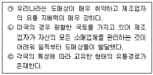
- 유통경로의 지역성
- 유통경로의 비탄력성
- 유통경로의 표준성
- 유통경로의 집중성
- 유통경로의 탈중계현상
(정답률: 76%)
15. 아래 글상자 ㉠과 ㉡에 해당하는 유통경로가 제공하는 효용으로 옳게 짝지어진 것은?
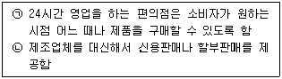
- ㉠ 시간효용, ㉡ 형태효용
- ㉠ 장소효용, ㉡ 시간효용
- ㉠ 시간효용, ㉡ 소유효용
- ㉠ 소유효용, ㉡ 시간효용
- ㉠ 형태효용, ㉡ 소유효용
(정답률: 64%)
16. 식품위생법 〔시행2 0 2 1 . 1 . 1 . 〕( 법률제 1 7 8 0 9호, 2020.12.29., 일부개정) 상에서 사용되는 각종 용어에 대한 설명으로 옳은 것은?
- “식품”이란 의약을 포함하여 인간이 섭취할 수 있는 가능성이 있는 제품을 말한다.
- “식품첨가물”에는 용기를 살균하는데 사용되는 물질도 포함된다.
- “집단급식소”란 영리를 목적으로 다수의 대중이 음식을 섭취하는 장소를 말한다.
- “식품이력추적관리”란 식품이 만들어진 후 소비자에게 전달되기까지의 과정을 말한다.
- “기구”란 음식을 담거나 포장하는 용기를 말하며 식품을 생산하는 기계는 포함되지 않는다.
(정답률: 45%)
17. 아래 글상자에 제시된 내용을 활용하여 경제적주문량을 고려한 연간 총재고비용을 구하라. (기준 : 총재고비용 = 주문비 + 재고유지비)
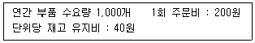
- 500원
- 1,000원
- 2,000원
- 3,000원
- 4,000원
(정답률: 33%)
18. 아래 글상자 ㉠, ㉡, ㉢에 해당하는 중간상이 수행하는 분류기준으로 옳게 짝지어진 것은?
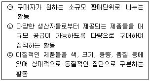
- ㉠ 분류(sorting out), ㉡ 수합(accumulation), ㉢ 분배(allocation)
- ㉠ 분류(sorting out), ㉡ 구색갖춤(assorting), ㉢ 수합(accumulation)
- ㉠ 분배(allocation), ㉡ 구색갖춤(assorting), ㉢ 분류(sorting out)
- ㉠ 분배(allocation), ㉡ 수합(accumulation), ㉢ 분류(sorting out)
- ㉠ 구색갖춤(assorting), ㉡ 분류(sorting out), ㉢ 분배(allocation)
(정답률: 58%)
19. 아래 글상자 ㉠과 ㉡에서 설명하는 제조업체가 부담하는 유통비용으로 옳게 짝지어진 것은?
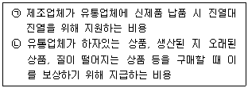
- ㉠ 리베이트, ㉡ 사후할인
- ㉠ 물량비례보조금, ㉡ 거래할인
- ㉠ 머천다이징 보조금, ㉡ 현금할인
- ㉠ 신제품입점비, ㉡ 상품지원금
- ㉠ 외상수금비, ㉡ 소매점 재고보호 보조금
(정답률: 69%)
20. 유통산업의 환경에 따른 유통경로의 변화를 다음의 다섯 단계로 나누어 볼 때 순서대로 나열한 것으로 옳은 것은?
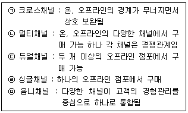
- ㉠-㉡-㉢-㉣-㉤
- ㉡-㉤-㉣-㉠-㉢
- ㉢-㉠-㉡-㉤-㉣
- ㉣-㉢-㉡-㉠-㉤
- ㉤-㉣-㉡-㉢-㉠
(정답률: 81%)
21. 유통에 관련된 내용으로 옳지 않은 것은?
- 제품의 물리적 흐름과 법적 소유권은 반드시 동일한 경로를 통해 이루어지고 동시에 이루어져야 한다.
- 유통경로는 물적 유통경로와 상적 유통경로로 분리된다.
- 물적 유통경로는 제품의 물리적 이전에 관여하는 독립적인 기관이나 개인들로 구성된 네트워크를 의미한다.
- 물적 유통경로는 유통목표에 부응하여 장소효용과 시간효용을 창출한다.
- 상적 유통경로는 소유효용을 창출한다.
(정답률: 65%)
22. 자사가 소유한 자가창고와 도, 소매상이나 제조업자가 임대한 영업창고를 비교한 설명으로 가장 옳지 않은 것은?
- 충분한 물량이 아니라면 자가 창고 이용 비용이 저렴하지 않은 경우도 있다.
- 자가 창고의 경우 기술적 진부화에 따른 위험이 있다.
- 영업창고를 이용하면 특정지역의 경우 세금혜택을 받는 경우도 있다.
- 영업창고를 이용하는 경우 초기투자비용이 높은 것이 단점이다.
- 영업창고의 경우 여러 고객을 상대로 하므로 규모의 경제가 가능하다.
(정답률: 64%)
23. UNGC(UN Global Compact)는 기업의 사회적 책임에 대한 지지와 이행을 촉구하기 위해 만든 자발적 국제협약으로 4개 분야의 10대 원칙을 핵심으로 하고 있다. 4개 분야에 포함되지 않는 것은?
- 반전쟁(Anti-War)
- 인권(Human Rights)
- 노동규칙(Labour Standards)
- 환경(Environment)
- 반부패(Anti-Corruption)
(정답률: 65%)
24. 유통경로에서 발생하는 유통의 흐름과 관련된 각종 설명 중 가장 옳지 않은 것은?
- 소비자에 대한 정보인 시장 정보는 후방흐름기능에 해당된다.
- 대금지급은 소유권의 이전에 대한 반대급부로 볼 수 있다.
- 소유권이 없는 경우에도 상품에 대한 물리적 보유가 가능한 경우가 있다.
- 제조업체, 도,소매상은 상품 소유권의 이전을 통해 수익을 창출한다.
- 제조업체가 도매상을 대상으로, 소매상이 소비자를 대상으로 하는 촉진전략은 풀(Pull)전략이다.
(정답률: 66%)
25. 물류활동에 관련된 내용으로 옳지 않은 것은?
- 반품물류 : 애초에 물품 반환, 반품의 소지를 없애기 위한 전사적 차원에서 고객요구를 파악하는 것이 중요하다.
- 생산물류 : 작업교체나 생산사이클을 단축하고 생산평준화 등을 고려한다.
- 조달물류 : 수송루트 최적화, JIT납품, 공차율 최대화 등을 고려한다.
- 판매물류 : 수배송효율화, 신선식품의 경우 콜드체인화, 공동물류센터 구축 등을 고려한다.
- 폐기물류 : 파손, 진부화 등으로 제품, 용기 등이 기능을 수행할 수 없는 상황이거나 기능수행 후 소멸되어야 하는 상황일 때 그것들을 폐기하는데 관련된 물류활동이다.
(정답률: 45%)
2과목: 상권분석
26. 권리금에 대한 설명 중에서 옳지 않은 것은?
- 해당 상권의 강점 등이 반영된 영업권의 일종으로, 점포의 소유자에게 임차인이 제공하는 추가적인 비용으로 보증금의 일부이다.
- 상가의 위치, 영업상의 노하우, 시설 및 비품 등과 같은 다양한 유무형의 재산적 가치에 대한 양도 또는 이용에 대한 대가로 지급하는 금전이다.
- 권리금을 일정 기간안에 회복할 수 있는 수익성이 확보될 수 있는지를 검토하여야 한다.
- 신축건물에도 바닥권리금이라는 것이 있는데, 이는 주변 상권의 강점을 반영하는 것이라고 볼 수 있다.
- 권리금이 보증금보다 많은 경우가 발생하기도 한다.
(정답률: 46%)
27. 상권분석에 필요한 소비자 데이터를 수집하는 조사기법 중에서 내점객조사법과 조사대상이 유사한 것으로 가장 옳은 것은?
- 편의추출조사법
- 점두(店頭)조사법
- 지역할당조사법
- 연령별 비율할당조사법
- 목적표본조사법
(정답률: 64%)
28. 정보기술의 발전이 유통 및 상권에 미친 영향으로 가장 옳지 않은 것은?
- 메이커에서 소매업으로의 파워시프트(power shift)현상 강화
- 중간 유통단계의 증가 및 배송거점의 분산화
- 메이커의 영업거점인 지점, 영업소 기능의 축소
- 수직적 협업체제 강화 및 아웃소싱의 진전
- 편의품 소비재 메이커의 상권 광역화
(정답률: 48%)
29. 상권분석 및 입지선정에 활용하는 지리정보시스템(GIS)에 대한 설명으로서 가장 옳지 않은 것은?
- 개별 상점이나 상점가의 위치정보를 점(點)데이터로, 토지 이용 등의 정보는 면(面)데이터로 지도에 수록한다.
- 지하철 노선이나 도로 등은 선(線)데이터로 지도에 수록하고 데이터베이스를 구축한다.
- 상점 또는 상점가를 방문한 고객을 대상으로 인터뷰조사를 하거나 설문조사를 하여 지도데이터베이스 구축에 활용한다.
- 라일리, 컨버스 등이 제안한 소매인력모델을 적용하는 경우에도 정확한 위치정보를 얻을 수 있는 지리정보시스템의 지원이 필요하다.
- 백화점, 대형마트 등의 대규모 점포의 입지선정 등에 활용될 수 있으나, 편의점 등 소규모 연쇄점의 입지선정이나 잠재고객 추정 등에는 활용가능성이 높지 않다.
(정답률: 59%)
30. 상권에 대한 설명으로 가장 옳지 않은 것은?
- 재화의 이동에서 사람을 매개로 하는 소매상권은 재화의 종류에 따라 그 사람의 비용이나 시간사용이 달라지므로 상권의 크기가 달라진다.
- 고가품, 고급품일수록 소비자들은 구매활동에 보다 많은 시간과 비용을 부담하려 하므로 상권범위가 확대된다.
- 도매상권은 사람을 매개로 하지 않기에 시간인자의 제약이 커져서 상권의 범위가 제한된다.
- 보존성이 강한 제품은 그렇지 않은 제품에 비해 상권이 넓어진다.
- 상권범위를 결정하는 비용인자(因子)에는 생산비, 운송비, 판매비용 등이 포함되며 그 비용이 상대적으로 저렴할수록 상권은 확대된다.
(정답률: 48%)
31. “교육환경 보호에 관한 법률(약칭: 교육환경법)”(법률 제17075호, 2020. 3. 24., 일부개정)에서 정한 초·중·고등학교의 “교육환경 절대보호구역”에서 영업할 수 있는 업종으로 가장 옳은 것은?
- 여관
- PC방
- 만화가게
- 담배가게
- 노래연습장
(정답률: 42%)
32. 소매점 상권의 크기에 영향을 미치는 주요 요인을 모두 나열한 것으로 가장 옳은 것은?
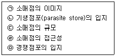
- ㉠, ㉡, ㉢, ㉣, ㉤
- ㉡, ㉢, ㉣, ㉤
- ㉠, ㉡, ㉢
- ㉡, ㉣, ㉤
- ㉠, ㉢, ㉣, ㉤
(정답률: 39%)
33. 크리스탈러(W. Christaller)의 중심지이론은 판매자와 소비자를 “경제인”으로 가정한다. 그 의미로서 가장 옳은 것은?
- 판매자와 소비자 모두 비용대비 이익의 최대화를 추구한다.
- 소비자는 거리와 상관없이 원하는 제품을 구매하러 이동한다.
- 판매자는 경쟁을 회피하려고 최선을 다한다.
- 소비자는 구매여행의 즐거움을 추구한다.
- 소비자는 가능한 한 상위계층 중심지에서 상품을 구매한다.
(정답률: 66%)
34. 상권측정을 위한 '상권실사'에 관한 설명으로서 가장 옳지 않은 것은?
- 항상 지도를 휴대하여 고객이 유입되는 지역을 정확하게 파악하는 것이 바람직하다.
- 요일별, 시간대별로 내점고객의 숫자나 특성이 달라질 수 있으므로, 상권실사에 이를 반영해야 한다.
- 내점하는 고객의 범위를 파악하는 것이 목적이므로 상권범위가 인접 도시의 경계보다 넓은 대형 교외점포에서는 도보고객을 조사할 필요가 없는 경우도 있다.
- 주로 자동차를 이용하는 고객이 증가하고 있는바, 도보보다는 자동차주행을 하면서 조사를 실시하는 것이 더 바람직하다.
- 기존 점포의 고객을 잘 관찰하여 교통수단별 내점비율을 파악하는 것이 중요하다.
(정답률: 56%)
35. 허프(Huff)의 수정모델을 적용해서 추정할 때, 아래 글상자 속의 소비자 K가 A지역에 쇼핑을 하러 갈 확률로서 가장 옳은 것은?
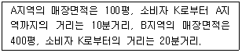
- 0.30
- 0.40
- 0.50
- 0.60
- 0.70
(정답률: 45%)
36. 매력적인 점포입지를 결정하기 위해서는 구체적인 입지조건을 평가하는 과정을 거친다. 점포의 입지조건에 대한 일반적 평가로서 그 내용이 가장 옳은 것은?
- 점포면적이 커지면 매출도 증가하는 경향이 있어 점포규모가 클수록 좋다
- 건축선 후퇴(setback)는 직접적으로 가시성에 긍정적인 영향을 미친다
- 점포 출입구 부근에 단차가 없으면 사람과 물품의 출입이 용이하여 좋다
- 점포 부지와 점포의 형태는 정사각형에 가까울수록 소비자 흡인에 좋다
- 평면도로 볼 때 점포의 정면너비에 비해 깊이가 더 클수록 바람직하다
(정답률: 62%)
37. 여러 층으로 구성된 백화점의 매장 내 입지에 관한 설명으로 가장 옳은 것은?
- 고객이 출입하는 층에서 멀리 떨어진 층일수록 매장공간의 가치가 올라간다.
- 대부분의 고객들이 왼쪽으로 돌기 때문에, 각 층 입구의 왼편이 좋은 입지이다.
- 점포 입구, 주 통로, 에스컬레이터, 승강기 등에서 가까울수록 유리한 입지이다.
- 층별 매장의 안쪽으로 고객을 유인하는데 최적인 매장배치 유형은 자유형배치이다.
- 백화점 매장 내 입지들의 공간적 가치는 층별 매장구성 변경의 영향은 받지 않는다.
(정답률: 67%)
38. 소매점은 상권의 매력성을 고려하여 입지를 선정해야 한다. 상권의 매력성을 측정하는 소매포화지수(IRS: Index of Retail Saturation)와 시장성장잠재력지수(MEP: Market Expansion Potential)에 대한 설명으로 가장 옳은 것은?
- IRS는 현재시점의 상권 내 경쟁 강도를 측정한다.
- MEP는 미래시점의 상권 내 경쟁 강도를 측정한다.
- 상권 내 경쟁이 심할수록 IRS도 커진다.
- MEP가 클수록 입지의 상권 매력성은 낮아진다.
- MEP보다는 IRS가 더 중요한 상권 매력성지수이다.
(정답률: 43%)
39. 소비자에 대한 직접적 조사를 통해 점포선택행동을 분석하는 확률모델들에 대한 설명으로 가장 옳은 것은?
- 점포에 대한 객관적 변수와 소비자의 주관적 변수를 모두 반영할 수 있는 방법에는 MNL모델과 수정Huff모델이 있다.
- 공간상호작용 모델의 대표적 분석방법에는 Huff모델, MNL모델, 회귀분석, 유사점포법 등이 해당된다.
- Huff모델과 달리 MNL모델은 일반적으로 상권을 세부지역(zone)으로 구분하는 절차를 거치지 않는다.
- Luce의 선택공리를 바탕으로 한 Huff모델과 달리 MNL모델은 선택공리와 관련이 없다.
- MNL모델은 분석과정에서 집단별 구매행동 데이터 대신 각 소비자의 개인별 데이터를 수집하여 활용한다.
(정답률: 34%)
40. 점포의 입지조건을 평가할 때 핵심적 요소가 되는 시계성은 점포를 자연적으로 인지할 수 있는 상태를 의미한다. 시계성을 평가하는 4가지 요소들을 정리할 때 아래 글상자 ㉠과 ㉡에 해당되는 용어로 가장 옳은 것은?
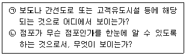
- ㉠ 거리 – ㉡ 주제
- ㉠ 거리 – ㉡ 대상
- ㉠ 거리 – ㉡ 기점
- ㉠ 기점 – ㉡ 대상
- ㉠ 기점 – ㉡ 주제
(정답률: 41%)
41. 생산구조가 다수의 소량분산생산구조이고 소비구조 역시 다수에 의한 소량분산소비구조일 때의 입지 특성을 설명한 것으로 옳은 것은?
- 수집 기능의 수행이 용이하고 분산 기능 수행도 용이한 곳에 입지한다.
- 분산 기능의 수행보다는 수집 기능의 수행이 용이한 곳에 입지한다.
- 수집 기능과 중개(仲介) 기능이 용이한 곳에 입지한다.
- 수집 기능의 수행보다는 분산 기능의 수행이 용이한 곳에 입지한다.
- 수집 기능과 분산 기능보다는 중개 기능의 수행이 용이한 곳에 입지한다.
(정답률: 37%)
42. 대형소매점을 개설하기 위해 대지면적이 1,000m2인 5층 상가건물을 매입하는 상황이다. 해당 건물의 지상 1층과 2층의 면적은 각각 600m2이고 3~5층 면적은 각각 400m2이다. 단, 주차장이 지하1층에 500m2, 1층 내부에 200m2, 건물외부(건물부속)에 300m2 설치되어 있다. 건물 5층에는 100m2의 주민공동시설이 설치되어 있다. 이 건물의 용적률로 가장 옳은 것은?
- 210%
- 220%
- 240%
- 260%
- 300%
(정답률: 34%)
43. 상권 유형별로 개념과 일반적 특징을 설명한 내용으로서 가장 옳은 것은?
- 부도심 상권의 주요 소비자는 점포 인근의 거주자들이어서, 생활밀착형 업종의 점포들이 입지하는 경향이 있다.
- 역세권상권은 지하철이나 철도역을 중심으로 형성되는 지상과 지하의 입체적 상권으로서, 저밀도 개발이 이루어지는 경우가 많다.
- 부도심상권은 보통 간선도로의 결절점이나 역세권을 중심으로 형성되는바, 도시 전체의 소비자를 유인하지는 못하는 경우가 많다.
- 도심상권은 중심업무지구(CBD)를 포함하며, 상권의 범위가 넓지만 소비자들의 체류시간은 상대적으로 짧다.
- 아파트상권은 고정고객의 비중이 높아 안정적인 수요확보가 가능하고, 외부고객을 유치하기 쉬워서 상권 확대가능성이 높다.
(정답률: 29%)
44. 소매점포 상권의 분석기법 가운데 하나인 Huff모델의 특징으로서 가장 옳은 것은?
- Huff모형은 점포이미지 등 다양한 변수를 반영하여 상권분석의 정확도를 높일 수 있다.
- 개별점포의 상권이 공간상에서 단절되어 단속적이며 타점포 상권과 중복되지 않는다고 가정한다.
- 개별 소비자들의 점포선택행동을 확률적 방법 대신 기술적방법(descriptive method)으로 분석한다.
- 상권 내 모든 점포의 매출액 합계를 추정할 수 있지만, 점포별 점유율은 추정하지 못한다.
- 각 소비자의 거주지와 점포까지의 물리적 거리는 이동시간으로 대체하여 분석하기도 한다.
(정답률: 48%)
45. 아래 글상자의 상권분석방법들 모두에 해당되거나 모두를 적용할 수 있는 상황으로서 가장 옳은 것은?
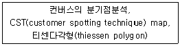
- 개별 소비자의 위치 분석
- 소비자를 대상으로 하는 설문조사의 실시
- 상권의 공간적 경계 파악
- 경쟁점의 영향력 파악
- 개별점포의 매출액 예측
(정답률: 57%)
3과목: 유통마케팅
46. 회계데이터를 기초로 유통마케팅 성과를 측정하는 방법으로 옳은 것은?
- 고객 만족도 조사
- 고객 획득률 및 유지율 측정
- 매출액 분석
- 브랜드 자산 측정
- 고객 생애가치 측정
(정답률: 63%)
47. 유통마케팅 조사과정 순서로 가장 옳은 것은?
- 조사목적 정의 – 조사 설계 - 조사 실시 – 데이터분석 및 결과해석 - 전략수립 및 실행 - 실행결과 평가
- 조사목적 정의 - 조사 실시 - 조사 설계 - 데이터분석 및 결과해석 - 전략수립 및 실행 - 실행결과 평가
- 조사목적 정의 - 조사 설계 - 조사 실시 – 전략수립 및 실행 – 데이터분석 및 결과해석 – 실행결과 평가
- 조사목적 정의 - 실행결과 평가 - 전략수립 및 실행 - 조사 실시 - 데이터분석 및 결과해석 - 대안선택 및 실행
- 조사목적 정의 - 조사 실시 - 데이터분석 및 결과해석 - 조사 설계 - 전략수립 및 실행 - 실행결과 평가
(정답률: 49%)
48. 아래 글상자 ㉠과 ㉡에 해당되는 용어로 가장 옳은 것은?
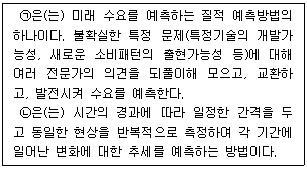
- ㉠ 투사법 ㉡ 시계열분석
- ㉠ 패널조사법 ㉡ 사례유추법
- ㉠ 투사법 ㉡ 수요확산모형분석
- ㉠ 델파이기법 ㉡ 시계열분석
- ㉠ 사례유추법 ㉡ 수요확산모형분석
(정답률: 61%)
49. 아래 글상자의 ( ) 안에 들어갈 용어로서 가장 옳은 것은?
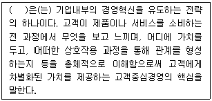
- 로열티 프로그램
- 고객마일리지 프로그램
- 고객불만관리
- 공유가치경영
- 전사적고객경험관리
(정답률: 58%)
50. 상품판매에 대한 설명으로 옳지 않은 것은?
- 판매는 고객과의 커뮤니케이션을 통해 상품을 판매하고, 고객과의 관계를 구축하고자 하는 활동이다.
- 판매활동은 크게 신규고객을 확보하기 위한 활동과 기존고객을 관리하는 활동으로 나누어진다.
- 인적판매는 다른 커뮤니케이션 수단에 비해 고객 1인당 접촉비용은 높은 편이지만, 개별적이고 심도 있는 쌍방향 커뮤니케이션이 가능하다는 장점을 가지고 있다.
- 과거에는 전략적 관점에서 고객과 관계를 형성하는 영업을 중요시 하였으나, 판매기술이 고도화되면서 이제는 판매를 빠르게 달성하는 기술적 판매방식이 더욱 부각되고 있다.
- 판매는 회사의 궁극적 목적인 수익창출을 실제로 구현하는 기능이다.
(정답률: 67%)
51. 영업사원의 역할 및 관리에 대한 설명으로 가장 옳지 않은 것은?
- 영업사원은 제품과 서비스의 판매를 위해 구매가능성이 높은 고객을 개발, 확보하고 접촉하는 역할을 수행한다.
- 영업사원에 대한 보상체계는 성과에 따른 커미션을 중심으로 구성되는 경우가 많다.
- 다른 직종의 업무에 비해 독립적으로 업무를 수행하는 경향이 있다.
- 영업사원이 확보한 고객정보는 회사의 소유이므로 동료 영업사원들과의 협업을 위해 자주 공유한다.
- 영업분야 전문인으로서의 역할과 조직구성원으로서의 역할 간 갈등이 발생할 수 있다.
(정답률: 56%)
52. 고객가치를 극대화하기 위한 고객관계관리(CRM)의 중심활동으로 가장 옳지 않은 것은?
- 신규고객확보 및 시장점유율 증대
- 고객수명주기 관리
- 데이터마이닝을 통한 고객 분석
- 고객가치의 분석과 계량화
- 고객획득/유지 및 추가판매의 믹스 최적화
(정답률: 55%)
53. 아래 글상자에서 설명하는 가격정책으로 옳은 것은?
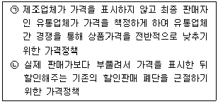
- 오픈 프라이스(open price)
- 클로즈 프라이스(close price)
- 하이로우 프라이스(high-low price)
- EDLP(every day low price)
- 단위가격표시제도(unit price system)
(정답률: 54%)
54. 유명 브랜드 상품 등을 중심으로 가격을 대폭 인하하여 고객을 유인한 다음, 방문한 고객에 대한 판매를 증진시키고자 하는 가격결정 방식은?
- 묶음가격결정(price bundling)
- 이분가격결정(two-part pricing)
- 로스리더가격결정(loss leader pricing)
- 포획가격결정(captive pricing)
- 단수가격결정(odd pricing)
(정답률: 55%)
55. 아래 글상자에서 설명하는 단품관리 이론으로 옳은 것은?
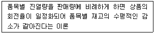
- 풍선효과(ballon) 이론
- 카테고리(category) 관리이론
- 20 : 80 이론
- 채찍(bullwhip) 이론
- 욕조마개(bathtub) 이론
(정답률: 41%)
56. 소비자의 구매동기는 부정적인 상태를 제거하려는 동기와 긍정적인 상태를 추구하려는 동기로 나뉘어진다. 아래 글상자 내용 중 부정적인 상태를 제거하려는 동기로만 짝지어진 것으로 가장 옳은 것은?
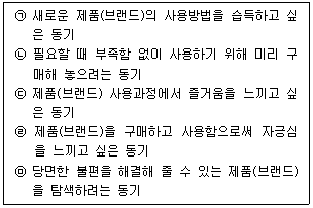
- ㉠, ㉡
- ㉠, ㉢
- ㉡, ㉢
- ㉡, ㉤
- ㉢, ㉣
(정답률: 67%)
57. 상품믹스에 대한 설명으로 가장 옳지 않은 것은?
- 상품믹스(product mix)란 기업이 판매하는 모든 상품의 집합을 말한다.
- 상품믹스는 상품계열(product line)의 수에 따라 폭(width)이 정해진다.
- 상품믹스는 평균 상품품목(product item)의 수에 따라 그 깊이(depth)가 정해진다.
- 상품믹스의 상품계열이 추가되면 상품다양화 또는 경영다각화가 이루어진다.
- 상품믹스의 상품품목이 증가하면 상품차별화의 정도가 약해지게 된다.
(정답률: 58%)
58. 아래의 글상자 안 ㉠과 ㉡에 해당하는 소매업 변천이론으로 옳은 것은?
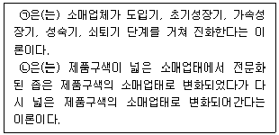
- ㉠ 자연도태설(진화론), ㉡ 소매아코디언 이론
- ㉠ 소매아코디언 이론, ㉡ 변증법적 과정
- ㉠ 소매수명주기 이론, ㉡ 소매아코디언 이론
- ㉠ 소매아코디언 이론, ㉡ 소매업수레바퀴 이론
- ㉠ 소매업수레바퀴 이론, ㉡ 변증법적 과정
(정답률: 66%)
59. 점포 내 레이아웃관리를 위한 의사결정의 순서로 가장 잘 나열된 것은?
- 판매방법 결정 - 상품배치 결정 - 진열용 기구배치 - 고객동선 결정
- 판매방법 결정 - 진열용 기구배치 - 고객동선 결정 - 상품배치 결정
- 상품배치 결정 - 고객동선 결정 - 진열용 기구배치 - 판매방법 결정
- 상품배치 결정 - 진열용 기구배치 - 고객동선 결정 - 판매방법 결정
- 상품배치 결정 - 고객동선 결정 - 판매방법 결정 - 진열용 기구배치
(정답률: 26%)
60. 아래 글상자에서 설명하는 소매점의 포지셔닝 전략으로 옳은 것은?
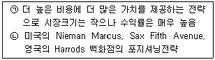
- More for More 전략
- More for the Same 전략
- Same for Less 전략
- Same for the Same 전략
- More for Less 전략
(정답률: 66%)
61. 소매점에 대한 소비자 기대관리에 대한 설명으로 옳지 않은 것은?
- 입지편리성을 판단할 때 소비자의 여행시간보다 물리적인 거리가 훨씬 더 중요하다.
- 점포분위기는 상품구색, 조명, 장식, 점포구조, 음악의 종류 등에 영향을 받는다.
- 소비자는 상품구매 이외에도 소매점을 통해 친교나 정보획득과 같은 욕구를 충족하고 싶어한다.
- 소비재는 소비자의 구매노력에 따라 편의품, 선매품, 전문품으로 구분할 수 있다
- 신용정책, 배달, 설치, 보증, 수리 등의 서비스는 소비자의 점포선택에 영향을 준다.
(정답률: 53%)
62. 유통업체에 대한 판촉 유형 중 가격 할인에 대한 설명으로 가장 옳지 않은 것은?
- 정해진 기간 동안에 일시적으로 유통업체에게 제품가격을 할인해 주는 것이다.
- 일정 기간 동안 유통업체가 구입한 모든 제품의 누적주문량에 따라 할인해 준다.
- 유통업체로 하여금 할인의 일부 또는 전부를 소비자가격에 반영하도록 유도한다.
- 정기적으로 일정 기간 동안 실시하며, 비정기적으로는 실시하지 않는 것이 보통이다.
- 수요예측력이 있으며 재고 처리능력을 보유한 유통업체에게 유리한 판촉유형이다.
(정답률: 29%)
63. 아래 글상자에서 설명하는 점포 레이아웃 형태로 옳은 것은?
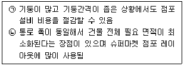
- 격자형 레이아웃
- 자유형 레이아웃
- 루프형 레이아웃
- 복합형 레이아웃
- 부띠끄형 레이아웃
(정답률: 68%)
64. 고객생애가치(CLV, Customer lifetime value)에 대한 설명으로 옳은 것은?
- 고객생애가치는 인터넷쇼핑몰 보다는 백화점을 이용하는 고객들을 평가하는데 용이하다.
- 고객생애가치는 고객과 기업간의 정성적 관계 가치이므로 수치화하여 측정하기 어렵다.
- 고객생애가치는 고객점유율(customer share)에 기반하여 정확히 추정할 수 있다.
- 고객생애가치는 고객이 일생동안 구매를 통해 기업에게 기여하는 수익을 현재가치로 환산한 금액을 말한다.
- 고객생애가치는 고객의 이탈률과 비례관계에 있다.
(정답률: 45%)
65. 유통경로 상의 수평적 갈등의 사례로서 가장 옳은 것은?
- 도매상의 불량상품 공급에 대한 소매상의 불평
- 납품업체의 납품기일 위반에 대한 제조업체의 불평
- 소매상이 무리한 배송을 요구했다는 택배업체의 불평
- 제조업체가 재고를 제때 보충하지 않았다는 유통업체의 불평
- 다른 딜러가 차량 가격을 너무 낮게 책정했다는 동일 차량회사 딜러의 불평
(정답률: 68%)
66. 유형별 고객에 대한 설명으로 옳지 않은 것은?
- 고객이란 기업의 제품이나 서비스를 구매하거나 이용하는 소비자를 말한다.
- 이탈고객은 기업의 기준에 의해서 더 이상 자사의 제품이나 서비스를 이용하지 않는 것으로 정의된 고객을 말한다.
- 내부고객은 조직 내부의 가치창조에 참여하는 고객으로서 기업의 직원들을 의미한다.
- 비활동 고객은 자사의 제품이나 서비스를 구매한 경험도 향후 자사의 고객이 될 수 있는 가능성도 없는 고객을 말한다.
- 가망고객은 현재 고객은 아니지만 광고, 홍보를 통해 유입될 가능성이 높은 고객을 말한다.
(정답률: 62%)
67. 점포 설계의 목적과 관련된 설명으로 가장 옳지 않은 것은?
- 점포는 다양하고 복잡한 모든 소비자들의 욕구와 니즈를 충족할 수 있도록 설계해야 한다.
- 점포는 상황에 따라 상품구색 변경을 수용하고 각 매장에 할당된 공간과 점포 배치의 수정이 용이하도록 설계하는 것이 좋다.
- 점포는 설계를 시행하고 외관을 유지하는데 드는 비용을 적정 수준으로 통제할 수 있도록 설계해야 한다.
- 점포는 고객 구매 행동을 자극하는 방식으로 설계해야 한다.
- 점포는 사전에 정의된 포지셔닝을 달성할 수 있도록 설계해야 한다.
(정답률: 47%)
68. 유통업체의 업태 간 경쟁(intertype competition)을 유발시키는 요인으로 가장 옳지 않은 것은?
- 소비자 수요의 질적 다양화
- 생활 필수품의 범위 확대
- 정보기술의 발달
- 품목별 전문유통기업의 등장
- 혼합상품화(scrambled merchandising) 현상의 증가
(정답률: 35%)
69. 매장 내 상품진열의 방법을 결정할 때 고려해야 할 요인으로서 가장 옳지 않은 것은?
- 상품들간의 조화
- 점포이미지와의 일관성
- 개별상품의 물리적 특성
- 개별상품의 잠재적 이윤
- 보유한 진열비품의 활용가능성
(정답률: 40%)
70. 아래 글상자 ㉠과 ㉡에 들어갈 알맞은 용어는?
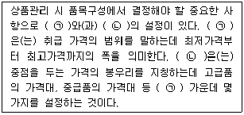
- ㉠ 상품의 폭, ㉡ 상품의 깊이
- ㉠ 상품의 깊이, ㉡ 상품의 폭
- ㉠ 가격, ㉡ 마진
- ㉠ 프라이스 라인, ㉡ 프라이스 존
- ㉠ 프라이스 존, ㉡ 프라이스 라인
(정답률: 44%)
4과목: 유통정보
71. CRM 시스템에 대한 설명으로 가장 옳지 않은 것은?
- 신규고객 창출, 기존고객 유지, 기존고객 강화를 위해 이용된다.
- 기업에서는 장기적인 고객관계 형성보다는 단기적인 고객관계 형성을 위해 도입하고 있다.
- 다양한 측면의 정보 분석을 통해 고객에 대한 이해도를 높여준다.
- 유통업체의 경쟁우위 창출에 도움을 제공한다.
- 고객유지율과 경영성과 모두를 향상시키기 위해 정보와 지식을 활용한다.
(정답률: 67%)
72. 정보 단위에 대한 설명으로 옳지 않은 것은?
- 기가바이트(GB)는 바이트(B) 보다 큰 단위이다.
- 테라바이트(TB)는 기가바이트(GB) 보다 큰 단위이다.
- 테라바이트(TB)는 메가바이트(MB) 보다 큰 단위이다.
- 메가바이트(MB)는 킬로바이트(KB) 보다 큰 단위이다.
- 기가바이트(GB)는 페타바이트(PB) 보다 큰 단위이다.
(정답률: 62%)
73. 충성도 프로그램에 대한 설명으로 옳지 않은 것은?
- 유통업체에서 운영하는 충성도 프로그램은 고객들의 구매 충성도를 높이기 위해 운영되는 단발성 프로그램이다.
- 유통업체 고객의 충성도는 다양한데, 대표적인 충성도에는 행동적 충성도와 태도적 충성도가 있다.
- 유통업체 고객의 행동적 충성도의 대표적인 사례로는 고객의 반복구매가 있다.
- 유통업체 고객이 특정한 상품에 대해 애착을 형성하거나 우호적 감정을 갖는 것을 태도적 충성도라고 한다.
- 유통업체에서 가지고 있는 충성도 강화 프로그램은 사전에 정해진 지침에 의해 운영된다.
(정답률: 60%)
74. 유통업체들은 정보시스템 운영을 효율화하기 위해 ERP시스템을 도입하고 있는데 ERP 시스템의 발전순서를 나열한 것으로 옳은 것은?
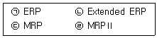
- ㉢ - ㉣ - ㉠ - ㉡
- ㉢ - ㉠ - ㉣ - ㉡
- ㉢ - ㉡ - ㉠ - ㉣
- ㉠ - ㉣ - ㉢ - ㉡
- ㉠ - ㉡ - ㉢ - ㉣
(정답률: 56%)
75. 사물인터넷 유형을 올인원 사물인터넷과 애프터마켓형 사물인터넷으로 구분할 경우 보기 중 애프터마켓형 사물인터넷 제품으로 가장 옳은 것은?
- 스마트 TV
- 스마트 지갑
- 스마트 냉장고
- 스마트 워치(watch)
- 크롬 캐스트(Chrome Cast)
(정답률: 58%)
76. 아래 글상자에서 설명하는 기술로 옳은 것은?
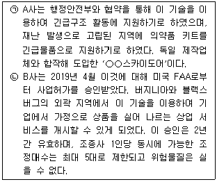
- GPS
- 드론
- 핀테크
- DASH
- WING
(정답률: 69%)
77. 전자상거래를 이용하는 고객들이 기업에서 발송하는 광고성 메일에 대해 수신거부 의사를 전달하면, 고객들은 광고성 메일을 받지 않을 수 있는데 이를 적절하게 설명하는 용어로 옳은 것은?
- 옵트아웃(opt out)
- 옵트인(opt in)
- 옵트오버(opt over)
- 옵트오프(opt off)
- 옵트온(opt on)
(정답률: 42%)
78. 유통업체와 제조업체들이 환경에 해로운 경영 활동을 하면서, 마치 친환경 경영 활동을 하고 있는 것처럼 광고하는 경우를 설명하는 용어로 옳은 것은?
- 카본 트러스트(Carbon Trust)
- 자원 발자국(Resource Footprint)
- 허브 앤 스포크(Hub and Spoke)
- 그린워시(Greenwash)
- 친환경 공급사슬(Greenness Supply Chain)
(정답률: 55%)
79. 아래 글상자의 ( )안에 공통적으로 들어갈 공급사슬관리 개념으로 가장 옳은 것은?
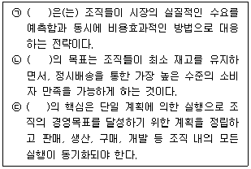
- S&OP(Sales and Operations Planning)
- LTM(Lead Time Management)
- VMI(Vendor Managed Inventory)
- DF(Demand Fulfillment)
- SF(Supply Fulfillment)
(정답률: 34%)
80. 전자자료교환(EDI)에 대한 설명으로 가장 옳지 않은 것은?
- 전용선 기반이나 텍스트 기반의 EDI 서비스는 개방적인터넷 환경으로 인해 보안상 취약성이 높아 웹기반 서비스 불가하며, 2022년 서비스가 예정이다.
- EDI 서비스는 기업 간 전자상거래 서식 또는 공공 서식을 서로 합의된 표준에 따라 표준화된 메시지 형태로 변환해 거래 당사자끼리 통신망을 통해 교환하는 방식이다.
- EDI 서비스는 수작업이나 서류 및 자료의 재입력을 하지 않게 되어 실수 및 오류를 방지하며 더 많은 비즈니스 문서를 보다 정확하고 보다 빨리 공유하고 처리할 수 있다.
- EDI 시스템의 기본 기능에는 기업의 수주, 발주, 수송, 결제 등을 처리하는 기능이 있으며, 상업 거래 자료를 변환, 통신, 표준 관리 그리고 거래처 관리 등으로 활용할 수 있다.
- EDI 서비스는 1986년 국제연합유럽경제위원회(UN/ECE) 주관으로 프로토콜 표준화 합의가 이루어졌고, 1988년 프로토콜의 명칭을 EDIFACT로 하였으며, 구문규칙을 국제표준(ISO 9735)으로 채택하였다.
(정답률: 60%)
81. POS(Point of Sale)시스템의 구성기기 중 상품명, 가격, 구입처, 구입가격 등 상품에 관련된 모든 정보가 데이터베이스화되어 있으며, 자동으로 판매파일, 재고파일, 구매파일 등을 갱신하고 기록하여, 추후 각종 통계자료 작성 시에 사용 가능케 하는 기기로 가장 옳은 것은?
- POS 터미널
- 바코드 리더기
- 바코드 스캐너
- 본부 주 컴퓨터
- 스토어 컨트롤러
(정답률: 45%)
82. e-SCM을 위해 도입해야 할 주요 정보기술로 가장 옳지 않은 것은?
- 의사결정을 지원해주기 위한 자료 탐색(data mining) 기술
- 내부 기능부서 간의 업무통합을 위한 전사적 자원관리(ERP) 시스템
- 기업내부의 한정된 일반적인 업무활동에서 발생하는 거래자료를 처리하기 위한 거래처리시스템
- 수집된 고객 및 거래데이터를 저장하기 위한 데이터웨어하우스(data warehouse)
- 고객, 공급자 등의 거래 상대방과의 거래 처리 및 의사소통을 위한 인터넷 기반의 전자상거래(e-Commerce)시스템
(정답률: 50%)
83. 바코드 기술과 RFID 기술에 대한 설명으로 옳지 않은 것은?
- 유통업체에서는 바코드 기술을 판매관리에 활용하고 있다.
- 바코드 기술은 핀테크 기술에 결합되어 다양한 모바일 앱에서 활용되고 있다.
- 바코드 기술을 대체할 기술로는 RFID(Radio Frequency IDentification) 기술이 있다.
- RFID 기술은 바코드에 비해 구축비용이 저렴하지만, 보안 취약성 때문에 활성화되고 있지 않다.
- RFID 기술은 단품관리에 활용될 수 있다.
(정답률: 65%)
84. 아래 글상자에서 설명하는 기술로 옳은 것은?
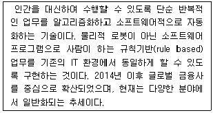
- RPA(Robotic Process Automation)
- 비콘(Beacon)
- 블루투스(Bluetooth)
- OCR(Optical Character Reader)
- 인공지능(Artificial Intelligence)
(정답률: 35%)
85. QR(Quick Response) 도입으로 얻는 효과로 가장 옳지 않은 것은?
- 기업의 원자재 조달에서부터 상품이 소매점에 진열되기까지 총 리드타임 단축
- 낮은 수준의 재고와 대응시간의 감소가 서로 상충되어 프로세싱 시간 증가
- 정확한 생산계획에 의한 생산관리로 낮은 수준의 재고 유지 가능
- 전표 등을 EDI로 처리하여 정확성 및 신속성 향상
- 기업 간 정보공유를 바탕으로 소비동향을 분석, 고객요구를 신속하게 반영하는 것이 가능
(정답률: 59%)
86. POS(Point of Sale) 시스템에 대한 설명으로 옳지 않은 것은?
- 유통업체에서는 POS 시스템을 도입함으로써 업무처리 속도를 개선하고, 업무에서의 오류를 줄일 수 있다.
- 유통업체에서는 POS 시스템의 데이터를 분석함으로써 중요한 의사결정에 활용할 수 있다.
- 유통업체에서는 POS 시스템을 통해 얻은 시계열자료를 분석함으로써 판매 상품에 대한 추세 분석을 할 수 있다.
- 유통업체에서는 POS 시스템을 도입해 특정 상품을 얼마나 판매하였는가에 대한 정보를 얻을 수 있다.
- 고객의 프라이버시 보호를 위해 바코드로 입력된 정보와 고객 정보의 연계를 금지하고 있어 유통업체는 개인 고객의 구매내역을 파악할 수 없다.
(정답률: 66%)
87. 아래 글상자 내용은 패턴 발견과 지식을 의사결정 및 지식 영역에 적용하기 위한 지능형 기술에 대한 설명이다. ( )안에 적합한 용어로 옳은 것은?
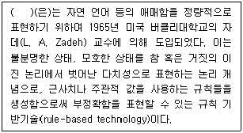
- 신경망
- 유전자 알고리즘
- 퍼지 논리
- 동적계획법
- 전문가시스템
(정답률: 52%)
88. 지식관리에 대한 설명으로 옳지 않은 것은?
- 명시적 지식은 쉽게 체계화할 수 있는 특성이 있다.
- 암묵적 지식은 조직에서 명시적 지식보다 강력한 힘을 발휘하기도 한다.
- 명시적 지식은 경쟁기업이 쉽게 모방하기 어려운 지식으로 경쟁우위 창출에 기반이 된다.
- 암묵적 지식은 사람의 머릿속에 있는 지식으로 지적자본 (intellectual capital)이라고도 한다.
- 기업에서는 구성원의 지식공유를 활성화하기 위하여 인센티브 (incentive)를 도입한다.
(정답률: 61%)
89. 전자서명이 갖추어야 할 특성으로 가장 옳지 않은 것은?
- 서명한 문서의 내용을 변경할 수 없어야 한다.
- 서명자가 자신이 서명한 사실을 부인할 수 없어야 한다.
- 서명은 서명자 이외의 다른 사람이 생성할 수 없어야 한다.
- 서명은 서명자의 의도에 따라 서명된 것임을 확인할 수 있어야 한다.
- 하나의 문서의 서명을 다른 문서의 서명으로 사용할 수 있어야 한다.
(정답률: 67%)
90. 유통업체에서 지식관리시스템 활용을 통해 얻을 수 있는 효과로 옳지 않은 것은?
- 동종 업계의 다양한 우수 사례를 공유할 수 있다.
- 지식을 획득하고, 이를 보다 효과적으로 활용함으로써 기업 성장에 도움을 받을 수 있다.
- 중요한 지식을 활용해 기업 운영에 있어 경쟁력을 확보할 수 있다.
- 지식 네트워크를 구축할 수 있고, 이를 통해 새로운 지식을 얻을 수 있다.
- 의사결정을 위한 정보를 제공해주는 시스템으로 의사결정권이 있는 사용자가 빠르게 판단할 수 있게 돕는다.
(정답률: 42%)
화물차량과 철도를 이용하는 시스템은 "인터모달 운송(Intemodal Transportation)"이라고도 불립니다. 이 중에서도 "피기백 시스템"은 화물차량 위에 철도용 컨테이너를 싣고, 철도를 이용하여 운송하는 방식입니다. 이는 화물차량과 철도의 각각의 장점을 살릴 수 있어서 효율적인 운송이 가능하며, 화물차량과 철도 간의 화물이 곧바로 이어지기 때문에 시간과 비용을 절약할 수 있습니다. 또한, 화물차량과 철도 간의 화물이 곧바로 이어지기 때문에 화물의 손상이나 분실 등의 위험을 최소화할 수 있습니다.